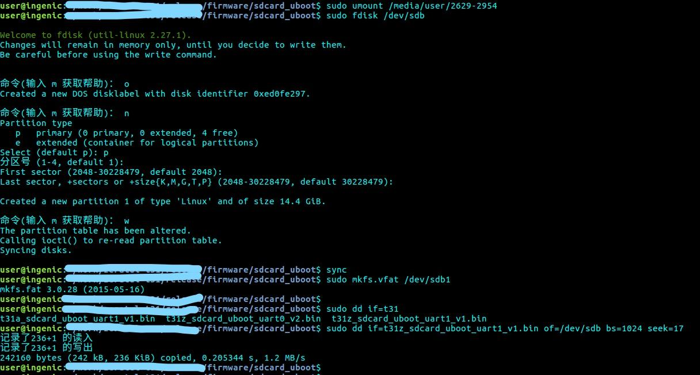

sort:2
Software information
When I tired to burn the program into the SD card. I follow the "Burning_method.pdf". In the 1.1, the step 6 is
"Compile booting u-boot and burn the u-boot to the SD card's 17 KB offset."
The is uboot file is in the firmware.7z. We need extract it and put the "t40xp_sdcard_uboot_msc0_uart1.bin" in our folder. Than run the command:
sudo dd if=t40xp_sdcard_uboot_msc0_uart1.bin of=/dev/sdb bs=1024 seek=17
This picture they showed is not accurate .

He tried to write T31 instead T40.